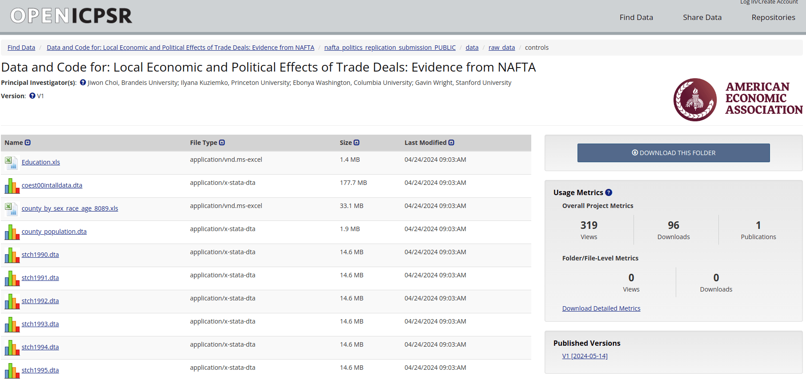

4 Folder Organization and Data Management
4.1 Why Project Organization Matters
A well-organized project is the foundation of reproducible research. Good structure makes your life easier, helps collaborators, and is now required by top journals. It also prevents disasters—like losing track of which file is which, or accidentally overwriting your raw data.
4.2 Recommended Folder Structure
Here’s a robust structure for economic replication projects:
├── README.md
├── data
│ ├── original # Raw, immutable data (never edit!)
│ └── temporary # Cleaned or processed data (can be regenerated)
├── code
│ ├── analysis # Scripts for data cleaning, analysis, etc.
│ └── figures # Scripts for generating plots
├── paper
│ ├── figures # Auto-generated figures
│ ├── tables # Auto-generated tables
│ └── paper.tex # Manuscript- README.md: The project’s roadmap. Document everything here—see Preparing the README.
- data/original: Sacred ground. Store only raw, downloaded data here. Never modify these files. Make them read-only if possible.
- data/temporary: For cleaned, merged, or processed data. These files can always be recreated from code.
- code/: All scripts, organized by purpose or language.
- paper/: Manuscript and all outputs (figures, tables) generated by code.
4.3 Golden Rules for Data Management
Never modify original data.
All cleaning and processing must be done in code, with outputs saved todata/temporary. This guarantees you can always start from scratch. Give each dataset a meaningful name that reflects its content and purpose.
Naming conventions to avoid Document everything.
For every dataset, record the source, download date, license, access conditions, and any modifications in the README. This is required by journals—see Preparing the README.Use open formats.
Prefer CSV, TXT, or other open formats. Avoid proprietary formats (e.g., Stata.dta, Excel.xlsx) when possible:- Open formats are readable by anyone, anywhere, at any time.
- Proprietary formats change (e.g., Stata
.dtafiles are not always backward compatible). - Excel can mangle data (see the UK COVID case undercount or Lehman Brothers asset deal error).
Some journals now require open formats for replication packages.
Back up your work.
Never rely on a single device. Use external drives or institutional remote storage for data and code.
One common mistake is to believe that working with a Dropbox or Google Drive folder is already a backup solution. The problem with these services is that they sync the data. If you accidentally delete a file or it gets corrupted, it may be lost forever, even in online copy. It is best to use backup solutions that offer snapshotting or versioning, so you can recover previous versions of files: e.g. Back-in-Time, Borg, Duplicati.
Version control for code, not data.
Use Git for code, scripts, and text files. Don’t put large data files in Git—it’s not designed for them. Use.gitignoreto exclude data and outputs. For very large files, tools like Git LFS exist, but keep it simple unless necessary. We will cover Git usage in detail in a later section.Avoid multiple versions of the same file.
Don’t createfinal_v2,final_v3, etc. as this leads to confusion and makes it hard to track changes. Use Git to track changes and revert if needed.
4.4 Intermediate Outputs: When and How
Sometimes, processing data is slow (e.g., merging huge files, running simulations). In these cases, it’s practical to save intermediate results in data/temporary.
However:
- Intermediate files should not be distributed in the replication package unless absolutely necessary (e.g., if processing takes hours/days).
- If you do include them, explain in the README why, and provide code to regenerate them if possible.
- If the original data or processing code changes, you must update all intermediate files.
- Advanced: Consider using a
Makefileto automate dependencies. This ensures that if a source file changes, all downstream files are rebuilt. (AMakefileis a script that specifies how to build outputs from inputs, and only reruns steps when needed. This is advanced but powerful.)
4.5 Practical Data Issues
- Non-data entries: Some sources (e.g., World Bank) may include images, notes, or metadata in their downloads. Always inspect files and write code to remove non-data content.
- Merging difficulties: Merging datasets can be tricky due to inconsistent IDs, typos, or missing values.
- Datetime formats: Dates are a common source of errors (e.g., Excel’s date handling). Always check and standardize date formats.
- Encoding issues: Files may use different character encodings (UTF-8, Latin-1, etc.), leading to errors or garbled text. Always specify encoding when reading files (e.g.,
encoding='utf-8'in Python or R).
4.6 Issues with the Data
Working with standalone data is rare. In general, researchers must combine different datasets to create a comprehensive analysis. Every time you merge datasets, problems can arise. In fact, it is quite common to spend more time on harmonizing datasets than on the actual analysis.
- Merging on country identifiers:
- Countries appear (e.g. South Sudan, Eritrea) and disappear (e.g., Yugoslavia, Czechoslovakia) over time.
- Different datasets may use different country names or codes (e.g., “USA” vs “United States”).
- Countries appear (e.g. South Sudan, Eritrea) and disappear (e.g., Yugoslavia, Czechoslovakia) over time.
- Datetime issues: Dates may be recorded in different formats (e.g., “YYYY-MM-DD” vs “MM/DD/YYYY”), be recorded as strings (text) instead of dates, use different languages for months, etc.
- Encoding issues: Files may use different character encodings leading to errors or garbled text. This is specially common when names include accents or special characters.
- Example from my own research: harmonize more than 2000 town names for Belgium because, French,
After each merge, check which IDs are present in the merged dataset and which are not. This can help identify any issues with the merge process.
When merging in Stata, if the master dataset already has a variable with the same name as one in the using dataset, Stata will not update the observations for which there is match, see the Stata manual.
Original Data Updated Data Merge Result
+---------+------------+ +---------+------------+ +---------+------------+
| Country | Population | | Country | Population | | Country | Population |
+---------+------------+ +---------+------------+ +---------+------------+
| France | 60 | | France | 65 | | France | 60 |
| UK | 70 | | UK | 80 | | UK | 70 |
| Italy | | | Italy | 65 | | Italy | 65 |
+---------+------------+ +---------+------------+ +---------+------------+4.7 Example: Downloading and Organizing World Bank Data
Suppose you’re replicating a paper using World Bank data:
- Download the CSV from the World Bank site.
- Save it as
data/original/world_bank_data.csv. - Immediately record the download date, source URL, and license in your README.
- Write a script to clean the data and save the result as
data/temporary/cleaned_data.csv. - If the cleaning takes a long time, you may save an intermediate file, but document this and provide code to regenerate it.
Key: Anyone should be able to delete data/temporary, rerun your code, and get identical results.